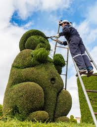

Flowers Information
The Commerical flowers seed production of Hybrids and open pollinated is considered profitable venture and,hence,it is popular amongst farmers on limited scale.Earlier,seed production was beign done on limited scale in Sri Nagar and plains of North India and in other localities due to limited demand.Mr.Man Mohan Attawar of M/s Indo American Hybrid Seeds,(India) Pvt.Ltd.,and Bengaluru has Started producing Hybrid seeds of Petunia for 100% export during mid-sixties,M/S Beauscape Farms,Sangrur,and punjab who started flower sed production involving farmers on large scale.Now many companies have started producing seed on large scale for export to Holland,U.K.,USA.France,Germany, and Japan etc.At present in
India.the area under flower seed production is about 600-800 .the main areas of flower seed production in Inadia are:Punjab(Sangrur,patiala,andLudhiana);Haryanapanipat,Srisa);Karnataka
(Bengaluru,Rani Banur);Himachal Pradesh(Kullu Valley);J&K(sri Nagar valley);and West Benga(Kalimpong).

Flowers also play an important role in ecology.They are an important food source for pollinators such as bees, butterflies,and hummingbirds.They also play a role in seed dispersal and in the maintenance of biodiversity. In horticulture, flowers are also used for breeding and genetic improvement.
flowers:The wastage of flowers we can use the bio-gass,and flowers we can use beautifull decorations and bueautiful perfumes and we can use the food colors ect.....